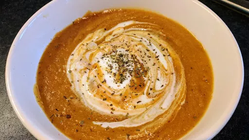

Sweet potato & lentil soup
40 mins
Serves 5
Vegetarian

Ingredients
- 100 g red split lentils
- 1 onion, chopped
- 2 tsp olive oil
- 1 clove garlic, finely chopped
- 2 tbsp curry paste
- 450 g sweet potatoes, peeled and cubed
- 450 g floury pototoes, peeled and cubed
- 1⅕ l hot vegetable stock
- 2 tbsp chopped mint (optional)
- 142 g carton low-fat natural yoghurt
- warm bread, to serve
Instructions
- Cook the
lentils100 g
in boiling water for 15 minutes. Fry the onion1
in the oil2 tsp
for 8 minutes until softened and beginning to brown. Stir in the garlic1 clove
, curry paste2 tbsp
and cubed potatoes450 g
. Cook for 5 minutes.
- Drain the
lentils100 g
. Add to the potatoes450 g
with the stock1⅕ l
and simmer for 12-15 minutes until the potatoes450 g
are fully cooked. Whizz in a food processor until smooth. Season to taste and heat through.
- Stir the
mint2 tbsp
, if using, into the yogurt and season to taste. Ladle the soup into bowl and swirl in the yoghurt142 g
. Serve with warm bread.
-
kcal
349
-
fat
5 g
-
saturates
1 g
-
carbs
63 g
-
sugar
14 g
-
fibre
9 g
-
protein
13 g
-
salt
1.53 g
BBC Good Food: Low-fat Feasts
Short Link
Long Link